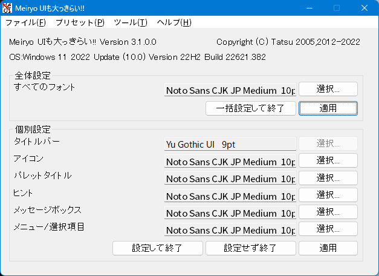
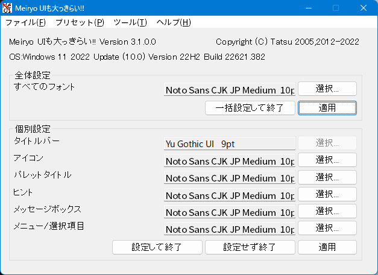
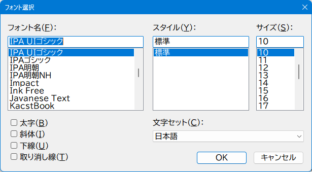

2.1 始めに
エクスプローラーからnoMeiryoUI.exeのアイコン  をダブルクリックするなどして、noMeiryoUI.exeを実行してください。
をダブルクリックするなどして、noMeiryoUI.exeを実行してください。
下記の画面が表示されます。
Windowsのバージョンは製品名(内部バージョン番号)という形式で表示しております。動作確認、障害報告等にご利用ください。

エクスプローラーからnoMeiryoUI.exeのアイコン  をダブルクリックするなどして、noMeiryoUI.exeを実行してください。
をダブルクリックするなどして、noMeiryoUI.exeを実行してください。
下記の画面が表示されます。
Windowsのバージョンは製品名(内部バージョン番号)という形式で表示しております。動作確認、障害報告等にご利用ください。

画面が表示されると画面の各部分の名称と設定されているフォント名が表示されます。
上側に表示されている「全体設定」という枠は画面の各部分のフォントを同じフォント・フォントサイズ・書式で設定するための項目です。
「すべてのフォント」と書かれた横には選択されているフォントが表示されます。
フォント名の横の「選択」ボタンを押下すると、フォント選択ダイアログからフォントを選択できます。
「一括設定して終了」ボタンを押下すると選択したフォント・フォントサイズ・書式を画面の各部分に設定してプログラムを終了します。
「適用」ボタンを押下すると選択したフォント・フォントサイズ・書式を画面の各部分に設定します。
下側に表示されている「個別設定」という枠は画面の各部分のフォントを個別に設定するための項目です。
フォントを変更する際は変更したい項目のフォント名の横にある「選択」ボタンを押下してください。
フォント選択ダイアログが表示されるので、フォント・フォントサイズ・書式を好みに合わせて設定してください。
設定が終わったら「設定して終了」ボタンを押下すると選択したフォントを画面の各部分に設定してプログラムを終了します。
「適用」ボタンを押下すると選択したフォントを画面の各部分に設定します。
「設定せず終了」ボタンを押下するとプログラムを終了します。
フォント名の横にある選択ボタンを押下すると下記のフォント選択ダイアログが表示されます。

フォント選択ダイアログでは以下の指定を行うことができます。
| 名称 | 機能 |
|---|---|
| フォント名(F) | フォントを指定します。 |
| スタイル(Y) | フォントのスタイルを指定します。 |
| サイズ(S) | フォントサイズを指定します。 |
| 太字(B) | チェックすると文字を太くします。 |
| 斜体(I) | チェックすると文字を斜体にします。 |
| 下線(U) | チェックすると下線を付けます。 |
| 取り消し線(T) | チェックすると取り消し線をつけます。 |
| 文字セット(C) | フォントの文字セットを指定します。 |
フォントを選択して「OK」ボタンを押下するとフォントを選択します。
選択必須の箇所が選択されてない場合、エラーメッセージが表示されますので指示に従って選択を行ってください。
コマンドラインからオプションを指定することで起動時にフォント設定を読み込むことができるほか、指定したフォント設定で自動的にシステムフォントを設定することができます。
コマンドラインの書式は以下の通りです。
noMeiryoUI フォント設定ファイル名 [-set]
フォント設定ファイルには本プログラムでフォント設定を保存したiniファイルを指定します。
フォント設定ファイル名に空白を含む場合はファイル名を"(ダブルクォーテーション)で囲ってください。
フォント設定ファイル名の後に空白を入れて-setと入力すると指定したフォント設定ファイルの内容でシステムフォントを設定してプログラムを終了します。
バッチファイルなどで使用するとあらかじめ用意したフォント設定ファイルの内容にシステムフォントを一発で設定することができて便利です。
MySet.iniというフォント設定ファイルを起動時に読み込む場合はコマンドプロンプトなどから以下のように入力します。
noMeiryoUI MySet.ini
Your Settings.iniというフォント設定ファイルにシステムフォントを設定する場合はコマンドプロンプトなどから以下のように入力します。
noMeiryoUI "Your Settings.ini" -set